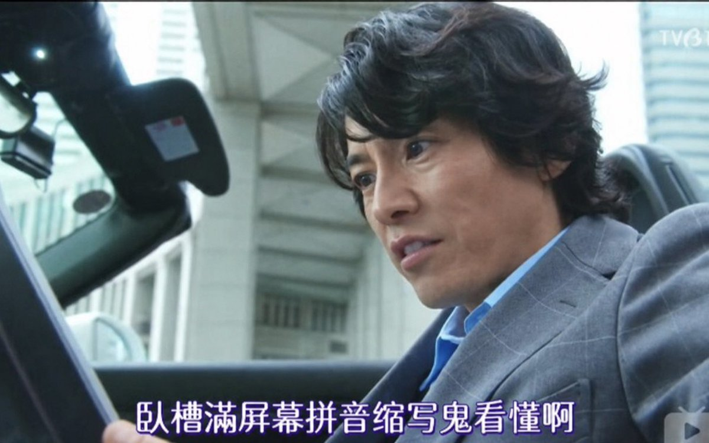

サイバー環状線
@CyberKanjousen
为什么要用「npy」缩写代替「男/女朋友」？
環状線最近总在墙内社媒看到「npy」，每次看都要反应一会儿才能知道是「男/女朋友」的意思；然后又要反应一会儿判断其到底是「男朋友」还是「女朋友」……
直接说「男/女朋友」不行吗？如果不想暴露性别的话，说「对象」「情侣」也可以。为什么非要用几个 字母组成的缩写呢？不仅不易理解，而且还会造成歧义……
满屏幕拼音缩写鬼看得懂啊.jpg
